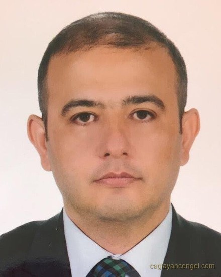

Finansal Yönetim Danışmanı
KOBİ ve aile şirketlerinde mali tablo, banka ekstresi, Findeks kaydı ve POS verisi tek tabloda birleştirilir. Kredi dosyası bankaya gitmeden önce burada açılır. Hangi rakamın ne söylediği, banka sormadan görünür hâle gelir.
Bizim sistem tıkandı.Tıkanan çoğu zaman sistem değildir. Yıllardır işi yürüten düzen, ölçek büyüdüğünde ve piyasa sıkıştığında yetmemeye başlar. Alışkanlık iyi günde yürür;
Mali müşavir firmanın geçmişini doğru tutar; sorumluluğu beyanın mevzuata uygunluğudur. Burada bakılan şey başkadır: aynı rakamların banka tarafında nasıl okunduğu.
| Peşin kesilen masraf | 84.508 ₺ |
| Hesabınıza giren | 2.090.726 ₺ |
| Aylık taksit | 139.623 ₺ |
| Toplam geri ödeme (24 taksit) | 3.350.955 ₺ |
| Toplam maliyet geri ödeme − hesabınıza giren | 1.260.229 ₺ |
2.175.234 ₺ anapara, aylık %3,61 faiz, 24 ay vade, %3,7 dosya masrafı ve %5 BSMV ile gerçekte ödenen aylık %4,18 olur. Banka 84.508 ₺'yi baştan keser, hesabınıza 2.090.726 ₺ girer; ama faiz 2.175.234 ₺ üzerinden işler ve aylık taksit 139.623 ₺ olur. Fark buradan doğar.
Diğer 9 hesaplama aracı →Sık karşılaşılan durumlar
Firmalar bu noktaya farklı sorularla gelir. Soruların kaynağı ortaktır. Veri vardır, bir arada değildir.
Bu soruların hepsinin cevabı firmanın kendi verisinde durur — dağınık hâlde.
Bu soruların ortak noktası bilgi eksikliği değil, bilginin dağınık olmasıdır. Mali tablo müşavirde, hareket bankada, ciro POS raporunda durur; üçü birbiriyle mutabakatlı değildir. Mali müşavir mevzuat tarafını yönetir; bu çalışma bankanın ve yönetimin baktığı tarafı kapsar.
Hakkımda
İlk altı yıl hayat sigortası ve bireysel emeklilik — bireysel emekliliğin Türkiye'de kurulduğu yıllar. Commercial Union (bugün AvivaSA) ve Fortis bünyesinde hayat sigortası, birikimli poliçeler, bireysel emeklilik planları ve emeklilik fonları.
2007–2023 arasında bankacılık — kredi dosyasının değerlendirildiği taraf. İlk dönem HSBC'de bireysel bankacılık: portföy yönetimi, mevduat ve yatırım ürünleri, vadeli işlemler, tahvil-bono, yatırım fonları. Ardından on yıl TEB'de işletme bankacılığında portföy yöneticiliği ve Anadolubank'ta KOBİ bankacılığında müdür yardımcılığı: ticari kredi portföyünün yönetimi, dosyaların hazırlanması ve tahsis birimine sunulması.
Bir talebin alınıp alınmayacağına, dosyanın tahsise iletilip iletilmeyeceğine bu masada karar verilirdi. Hangi soruyla karşılaşacağı, hangi rakama takılacağı ve neyin önceden cevaplanması gerektiği de burada belirlenirdi. Aynı bakış bugün firma tarafında kullanılıyor. Dosya bankaya gitmeden önce burada açılıyor, eksik olan banka sormadan tamamlanıyor.

PDF rapor. Firmanın mevcut durumu, bulgular ve öncelik sırası yazılı olarak teslim edilir. Ölçüm bir analiz modeliyle yapılır; teslim edilen şey modelin kendisi değil, ondan çıkan rapordur. Ödeme takvimi, bütçe veya banka dosyası isteniyorsa bunlar da rapora girer.
Rakam olumsuzsa rapor bunu yazar. Çalışmanın amacı mevcut durumu onaylamak değil, görünmeyeni ölçmektir.
Firmaya kendi düzeni kurulur: takip tabloları, ödeme takvimi ve raporlama biçimi firmada kalır, ekip devralır. Ölçümde kullanılan analiz modeli çalışmanın aracıdır; firmaya devredilmez. Firmada kalan şey işleyen düzenin kendisidir.
Kapsam
Aşağıdakiler ayrı ayrı satılan paketler değildir. Firmanın önceliğine göre biri öne çıkar, diğerleri onu tamamlar.
Mali müşavir, tabloyu vergi mevzuatına göre üretir; sorumluluğu beyanın doğruluğudur. Banka ise aynı tabloyu kendi analiz formatına dönüştürerek okur ve baktığı şey ödeme gücüdür. Aynı veriden iki farklı sonuç çıkar. Bu fark yönetilmediğinde firma, bankanın gördüğü tabloyu ilk kez talebi olumsuz sonuçlandığında öğrenir.
Bilanço, gelir tablosu ve mizan, bankaların kredi analizinde kullandığı spread mantığıyla yeniden düzenlenir: kalemler yeniden sınıflandırılır, ortaklardan alacaklar ve grup içi hareketler ayrıştırılır, özkaynağın gerçek büyüklüğü hesaplanır. Sonuçta üç rakam görünür hâle gelir — faaliyetin ürettiği kâr, işletme sermayesi ihtiyacı ve bankanın ödeme gücü olarak gördüğü tutar.
Paranın hangi gün, hangi bankadan, hangi kesintiyle geldiği izlenir. POS komisyonları sözleşme oranıyla ekstre üzerinden karşılaştırılır; blokaj süreleri ve valör farkları maliyete dâhil edilir. Uygulanan oranın sözleşmeden sapması, çoğu firmada yıllık olarak ölçüldüğünde görünür büyüklüğe ulaşır.
Tahsilat ve ödeme vadeleri karşılaştırıldığında, işletmenin kaç günlük finansmanı kendi kaynağından karşıladığı ortaya çıkar. Bu süre, kredi ihtiyacının gerçek sebebini gösteren ölçüdür.
Alacaklar ve stoklar yaşlandırılır: hangi müşteride kaç gündür para beklediği, hangi stok kaleminin devretmediği tek tabloda görünür. Kasa ve banka hareketleri kayıtla karşılaştırılır; gider kalemleri dönem dönem izlenir. Ciro büyürken kasanın neden boşaldığı çoğu firmada bu üç kalemden birinde durur.
Bankalardaki kredi, limit ve teminat bilgisi tek tabloda toplanır; anapara ve faiz ödemeleri gün gün takvime bağlanır. Kullanılmayan limit, teminat fazlası, vadesi dolmuş genel kredi sözleşmesi ve tazeliğini yitirmiş Findeks kaydı bu tabloda görünür. Çek ve senet yükü aynı takvime girer. Ödemeler hiç aksamasa bile limit doluluğu, kredi sayısı ve teminat yapısı firmanın Findeks notunu aşağı çekebilir; hangi kalemin etkilediği kayıttan okunur.
Kredilerin etkin maliyeti — komisyon, masraf ve vade yapısı dâhil — banka bazında karşılaştırılır. Yeni bir talep öncesinde dosyanın hangi soruyla karşılaşacağı önceden bilinir; eksik olan, banka sormadan tamamlanır.
Hazırlık masa başında bitmez. Kredi veya limit talebi ilgili bankalara iletilir, evrak akışı takip edilir ve süreç banka tarafındaki yetkiliyle yürütülür. Belgelerin bankalarla paylaşımı çalışma sözleşmesindeki açık rızaya dayanır ve yalnızca o talep kapsamında yapılır.
Makine alınacak, şube açılacak, eldeki parayla kredi kapatılacak ya da yeni bir ürün fiyatlanacak. Bu kararların hepsi aynı soruyu sorar: firma bunu kaldırır mı, kaldırırsa hangi ay sıkışır? Karar öncesinde rakamla sınanır — sonrasında değil.
Yatırımın kendini kaç ayda ödeyeceği, kredi kapatmanın mı yoksa nakitte tutmanın mı daha ucuz olduğu, hangi ürünün gerçekte kâr bıraktığı ölçülür. Yıllık bütçe kurulur ve gerçekleşenle ay ay karşılaştırılır; sapma büyüdüğünde nedeni aranır.
Mevcut durumun ölçülmesi ve yazılı bulgu raporu.
Kurulan tabloların sürekli işletilmesi ve banka ilişkisinin yönetimi.
Kredi başvurusu, yatırım kararı veya yeniden yapılandırma gibi tek konu.
Hangi biçimde yürüyeceği ve ücreti, kapsam görüldükten sonra yazılı olarak belirlenir.
Finans sadece kredi değildir
Finans, kredi almaktan ibaret değildir. Aşağıdakiler bir firmanın finans düzenini oluşturan temel parçalardır. İşaretleyin — kaçı sizde çalışıyor? Cevaplarınız tarayıcınızdan çıkmaz — siz göndermeyi seçmedikçe.
Bu maddelerin çoğu Türkiye'deki KOBİ'lerde ön muhasebeye devredilmiş durumdadır. Ön muhasebe kaydı tutar; bu maddeler kayıt değil, yönetim işidir. Aradaki boşluk çoğu firmada kimsenin görevi değildir — çalışma tam olarak orayı kapatır.
Nasıl ilerler
Firmanın önceliği ve hangi verinin görünmediği belirlenir; kapsam buradan çıkar.
Mizan, mali tablolar, banka ekstreleri, Findeks kaydı ve POS dökümü toplanır. Çalışma bu verinin eksiksiz paylaşılmasına bağlıdır; veri gelmezse ölçüm de yapılamaz.
Veri tek tabloda birleştirilir, kaynaklar mutabakata bağlanır, bulgular yazılı sunulur. Hesaplama ve tutarsızlık taraması yapay zekâ destekli araçlarla yapılır; değerlendirme, yorum ve rapor danışmana aittir.
Firmanın kendi ön muhasebe sisteminde takip düzeni kurulur; işletme sorumluluğu firma ekibine geçer.
Anket değil, belge. Değerlendirme firmanın kendi beyanına değil; mizana, banka ekstresine ve Findeks kaydına dayanır.
Sık sorulanlar
Mali müşavir vergi ve mevzuat tarafını yönetir; o görev yerinde kalır. Bu çalışma aynı veriyi bankanın ve yönetimin baktığı açıdan okur. İki iş çakışmaz; uygulamada mali müşavirle birlikte yürütülür.
İlk ölçümde firmanın mevcut durumu yazılı olarak görünür. Kurulan düzenin oturması firmanın büyüklüğüne ve verinin hazır olma derecesine bağlıdır; öngörülen süre işin başında belirlenir.
Gizlilik sözleşmeyle güvence altındadır. Belgeler yalnız ilgili firmanın dosyasında tutulur; başka firmayla karşılaştırılmaz, danışmanlık dışı üçüncü kişiyle paylaşılmaz. Bankalar bunun istisnasıdır: kredi ve limit süreçleri için gereken belgeler, sözleşmedeki açık rızaya dayanarak yalnızca o talep kapsamında ilgili bankayla paylaşılır (ayrıntı gizlilik metninde). Çalışma tamamlandığında rapor ve kurulan düzen firmada kalır; ölçüm modeli devredilmez.
Evet, ve bunu peşinen bilmenizi isterim. Hesaplama ve tutarsızlık taraması yapay zekâ destekli araçlarla yapılır; değerlendirme, yorum ve rapor bana aittir. Bu araçların sunucuları yurt dışındadır — Anthropic, OpenAI, Google ve WhatsApp; hepsi ABD merkezli ve bu ülke için Kişisel Verileri Koruma Kurulu'nun yeterlilik kararı yok.
Bu yüzden sıra şudur: önce kimlik bilgileri belgeden çıkarılır (ad, T.C. no, telefon, adres), çözümleme rakamlar üzerinden yürür. Sağlık ve benzeri özel nitelikli veriler hiçbir koşulda bu araçlara girmez. Maskelemenin mümkün olmadığı yerde yazılı açık rızanız alınır. Rıza vermezseniz iş yine yapılır, yalnız daha uzun sürer. Sözleşme ve rıza imzalanmadan hiçbir belge hiçbir araca girmez (ayrıntı gizlilik metninde).
Çalışma, kapsam görüldükten sonra imzalanan bir sözleşmeyle başlar. Sözleşmede kapsam, süre, ücret ve gizlilik yükümlülüğü yazılıdır; sözlü mutabakatla iş yürütülmez. Ücret bu aşamada belirlenir. Kapsam çalışma sırasında genişlerse bu bildirilir ve yeniden değerlendirilir.
Çıktı nasıl görünüyor
Anonimleştirilmiş gerçek bir dosyadan çıkarılmış örnek rapor; ve firmanızın kendi rakamlarını girip bankanın baktığı oranları görebileceğiniz araçlar. Girdiğiniz rakamlar tarayıcınızdan çıkmaz.
İletişim
Firmanın ne iş yaptığını ve şu an hangi rakamın görünmediğini aktarmanız yeterli. Bir görüşme, çoğu firmada önceliğin nerede olduğunu belirlemeye yeter.